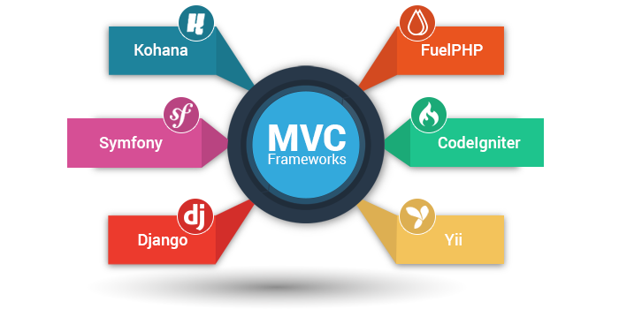

MODULO 1: FRAMEWORKS
Desde el punto de vista del desarrollo de software, un framework es una estructura de soporte definida, en la cual otro proyecto de software puede ser organizado y desarrollado.
Siendo muy simple, es un esquema (un esqueleto, un patrón) para el desarrollo y/o la implementación de una aplicación. Sí, es una definición muy genérica, pero también puede serlo un framework: sin ir más lejos, el paradigma MVC (Model-View-Controller) dice poco más que “separa en tu aplicación la gestión de los datos, las operaciones, y la presentación”. En el otro extremo, otros frameworks pueden llegar al detalle de definir los nombres de ficheros, su estructura, las convenciones de programación, etc.
